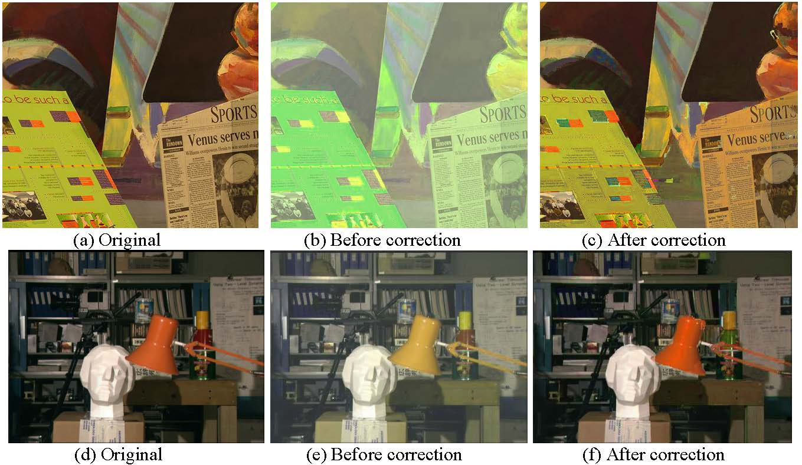
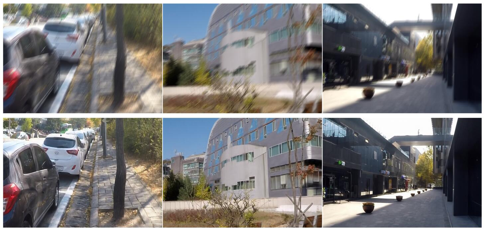
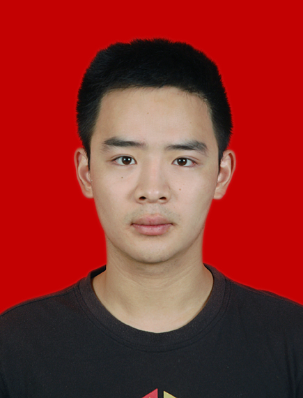
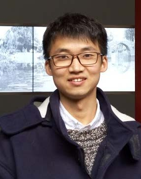
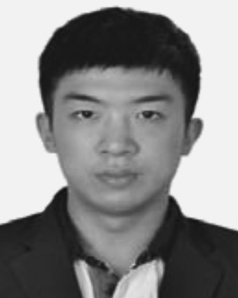
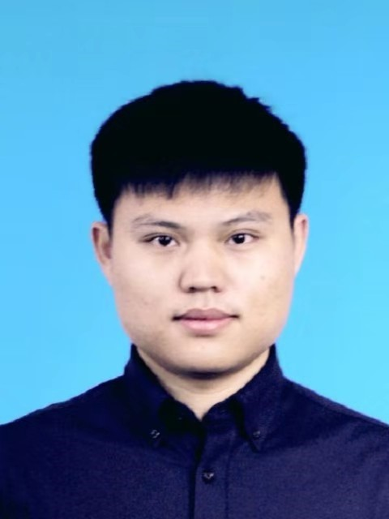

Education
| • 09/2005-07/2010 | Ph.D., Pattern Recognition and Intelligent System, University of Science and Technology of China (USTC) |
| • 09/2001-07/2005 | B.Eng., Automation, University of Science and Technology of China (USTC) |
[↑TOP]
Experience
| • 07/2017-now | Professor, Northwestern Polytechnical University, China |
| • 01/2014-06/2017 | Associate Professor, Northwestern Polytechnical University, China |
| • 10/2010-12/2013 | Post-doctor, Xi'an Institute of Optics and Precision Mechanics, Chinese Academy of Sciences, China |
[↑TOP]
Research Interests
Computer vision, pattern recognition, machine learning methods and their related applications particularly in video surveillance, intelligent transportation system, remote sensing and multimedia analysis.
[↑TOP]
Selected Publications
- AWFA-LPD: Adaptive Weight Feature Aggregation for Multi-frame License Plate Detection Proc. ACM International Conference on Multimedia Retrieval (ICMR) 2021
- V-LPDR: Towards a Unified Framework for License Plate Detection, Tracking, and Recognition in Real-World Traffic Videos Neurocomputing vol. 449, pp.189-206, 2021
- Robust Rank Constrained Sparse Learning: A Graph-Based Framework for Single-View and Multi-View Clustering IEEE Transactions on Cybernetics (T-CYB) DOI:10.1109/TCYB.2021.3067137
- Road Extraction from Satellite Image via Auxiliary Road Location Prediction Proc. IEEE International Geoscience and Remote Sensing Symposium (IGARSS) 2021. Oral
- Spatial-spectral Hyperspectral Image Classification via Multiple Random Anchor Graphs Ensemble Learning Proc. IEEE International Geoscience and Remote Sensing Symposium (IGARSS) 2021
- Hyperspectral Image Super-Resolution via Multi-Domain Feature Learning Proc. IEEE International Geoscience and Remote Sensing Symposium (IGARSS) 2021
- S. Bai, J. Gao, Q. Wang*, and X. Li, “Multi-domain Synchronous Refinement Network for Unsupervised Cross-Domain Person Re-Identification,” Proc. IEEE International Conference on Multimedia and Expo (ICME), 2021. Oral.[PDF]
- Q. Li, Q. Wang*, and X. Li, “Hyperspectral Image Super-Resolution via Adjacent Spectral Fusion Strategy,” Proc. International Conference on Acoustic, Speech, and Signal Processing (ICASSP), pp.1645-1649, 2021.[PDF]
- W. Lin, J. Gao, Q. Wang*, and X. Li, “Learning to Detect Anomaly Events in Crowd Scenes from Synthetic Data,” Neurocomputing, DOI: 10.1016/j.neucom.2021.01.031.
- Z. Xiong, Y. Yuan, and Q. Wang, “ASK: Adaptively Selecting Key Local Features for RGB-D Scene Recognition,” IEEE Transactions on Image Processing (T-IP), vol. 30, pp. 2722-2733, 2021.[PDF]
- Neuron Linear Transformation: Modeling the Domain Shift for Crowd Counting IEEE Transactions on Neural Networks and Learning Systems (T-NNLS) DOI: 10.1109/TNNLS.2021.3051371
- X. Li, Z. Zhao, and Q. Wang*, “ABSSNet: Attention Based Spatial Segmentation Network for Traffic Scene Understanding,” IEEE Transactions on Cybernetics (T-CYB), DOI: 10.1109/TCYB.2021.3050558.[PDF]
- X. Li, Q. Wang, F. Nie, and M. Chen, “Locality Adaptive Discriminant Analysis Framework,” IEEE Transactions on Cybernetics (T-CYB), DOI: 10.1109/TCYB.2021.3049684.[PDF]
- Q. Li, Q. Wang* and X. Li, “Exploring the Relationship between 2D/3D Convolution for Hyperspectral Image Super-Resolution,” IEEE Transactions on Geoscience and Remote Sensing (T-GRS), DOI: 10.1109/TGRS.2020.3047363.[PDF] [Code]
- Q. Wang, W. Huang, X. Zhang, and X. Li, “Word-Sentence Framework for Remote Sensing Image Captioning,” IEEE Transactions on Geoscience and Remote Sensing (T-GRS), DOI: 10.1109/TGRS.2020.3044054.[PDF]
- Q. Wang, W. Huang, Z. Xiong, and X. Li, “Looking Closer at the Scene: Multi-Scale Representation Learning for Remote Sensing Image Scene Classification,” IEEE Transactions on Neural Networks and Learning Systems (T-NNLS), DOI: 10.1109/TNNLS.2020.3042276.[PDF] [Code]
- Q. Wang, T. Han, Z. Qin, J. Gao, and X. Li, “Multi-task Attention Network for Lane Detection and Fitting,” IEEE Transactions on Neural Networks and Learning Systems (T-NNLS), DOI: 10.1109/TNNLS.2020.3039675.[PDF]
- Q. Wang, Q. Li, and X. Li, “Hyperspectral Image Super-Resolution Using Spectrum and Feature Context,” IEEE Transactions on Industrial Electronics (T-IE), DOI: 10.1109/TIE.2020.303809.[PDF] [Code]
- J. Gao, Y. Yuan, and Q. Wang*, “Feature-aware Adaptation and Density Alignment for Crowd Counting in Video Surveillance,” IEEE Transactions on Cybernetics (T-CYB), DOI: 10.1109/TCYB.2020.3034316.[PDF]
- Q. Wang, W. Lin, J. Gao, and X. Li, “Density-aware Curriculum Learning for Crowd Counting,” IEEE Transactions on Cybernetics (T-CYB), DOI: 10.1109/TCYB.2020.3033428.[PDF] [Code]
- Y. Yuan, X. Li, Q. Wang*, and F. Nie, “A Semi-supervised Learning Algorithm via Adaptive Laplacian Graph,” Neurocomputing, vol. 426, pp. 162-173, 2021.[PDF]
- S. Bai, Q. Wang*, and X. Li, “MFI: Multi-range Feature Interchange for Video Action Recognition,” International Conference on Pattern Recognition (ICPR), 2020.[PDF]
- J. Wang, G. Zhang, K. Zhang, Y. Zhao, Q. Wang, and X. Li, “Detection of Small Aerial Object Using Random Projection Feature with Region Clustering,” IEEE Transactions on Cybernetics (T-CYB), DOI: 10.1109/TCYB.2020.3018120.
- T. Han, J. Gao, Y. Yuan and Q. Wang*, “Unsupervised Semantic Aggregation and Deformable Template Matching for Semi-Supervised Learning,” Proc. Conference on Neural Information Processing Systems (NeurIPS), pp. 9961-9971, 2020.[PDF] [Code]
- X. Zhang, W. Huang, Q. Wang, and X. Li, “SSR-NET: Spatial-Spectral Reconstruction Network for Hyperspectral and Multispectral Image Fusion,” IEEE Transactions on Geoscience and Remote Sensing (T-GRS), DOI: 10.1109/TGRS.2020.3018732.[PDF] [Code]
- Q. Wang, J. Gao, W. Lin, and Y. Yuan, “Pixel-wise Crowd Understanding via Synthetic Data,” International Journal of Computer Vision (IJCV), vol. 129, pp. 225-245, 2021.[PDF][Project/Code/Dataset]
- NWPU-Crowd: A Large-Scale Benchmark for Crowd Counting and Localization IEEE Transactions on Pattern Analysis and Machine Intelligence (T-PAMI) vol. 43, no. 6, pp. 2141-2149, 2021
- Q. Wang, Q. Li, and X. Li, “A Fast Neighborhood Grouping Method for Hyperspectral Band Selection,” IEEE Transactions on Geoscience and Remote Sensing (T-GRS), DOI: 10.1109/TGRS.2020.3011002.[PDF] [Code]
- X. Li, X. Zhang, W. Huang, and Q. Wang*, “Truncation Cross Entropy Loss for Remote Sensing Image Captioning,” IEEE Transactions on Geoscience and Remote Sensing (T-GRS), DOI: 10.1109/TGRS.2020.3010106.[PDF]
- Z. Zhao, Q. Wang, and X. Li, “Deep Reinforcement Learning Based Lane Detection and Localization,” Neurocomputing, vol. 413, pp. 328-338, 2020.[PDF]
- Q. Wang, X. He, X. Jiang, and X. Li, “Robust Bi-stochastic Graph Regularized Matrix Factorization for Data Clustering,” IEEE Transactions on Pattern Analysis and Machine Intelligence (T-PAMI), DOI: 10.1109/TPAMI.2020.3007673.[PDF]
- Y. Lu, Y. Yuan, and Q. Wang, “A Dense Connection Based Network for Real-time Object Tracking,” Neurocomputing, vol. 410, pp. 229-236, 2020.
- Q. Li, Q. Wang*, and X. Li, “Mixed 2D/3D Convolutional Network for Hyperspectral Image Super-Resolution,” Remote Sensing, vol. 12, no. 10, 1660, 2020. [PDF] [Code]
- Y. Yuan, Q. Wang, and X. Li, “Hyperspectral and Multispectral Image Fusion Using Non-Convex Relaxation Low Rank and Total Variation Regularization,” Proc. IEEE International Geoscience and Remote Sensing Symposium (IGARSS), 2020. [PDF]
- C. Zhang, Q. Wang*, and X. Li, “EQ-LPR: Efficient Quality-aware License Plate Recognition,” Proc. IEEE International Conference on Image Processing (ICIP), pp. 653-657, 2020. [PDF]
- X. Li, Y. Yuan, Q. Wang*, “Hyperspectral and Multispectral Image Fusion via Nonlocal Low Rank Tensor Approximation and Sparse Representation,” IEEE Transactions on Geoscience and Remote Sensing (T-GRS), vol. 59, no. 1, pp. 550-562, 2021. [PDF]
- J. Lin, L. Zhao, Q. Wang*, Z. Wang, and R. Ward, “DT-LET: Deep Transfer Learning by Exploring Where to Transfer,” Neurocomputing, vol. 390, pp. 99-107, 2020. [PDF]
- Q. Wang, F. Zhang, and X. Li, “Hyperspectral Band Selection via Optimal Neighborhood Reconstruction,” IEEE Transactions on Geoscience and Remote Sensing (T-GRS), vol. 58, no. 12, pp. 8465-8476 , 2020. [PDF] [Code] [Dataset Link1 Link2 ]
- X. Li, M. Chen, and Q. Wang*, “Quantifying and Detecting Collective Motion in Crowd Scenes,” IEEE Transactions on Image Processing (T-IP), vol. 29, pp. 5571-5583, 2020. [PDF]
- X. Li, R. Zhang, Q. Wang, and H. Zhang, “Autoencoder Constrained Clustering with Adaptive Neighbors,” IEEE Transactions on Neural Networks and Learning Systems (T-NNLS), vol. 32, pp. 433-449, 2021.
- W. Huang, Q. Wang*, and X. Li, “Denoising Based Multi-Scale Feature Fusion for Remote Sensing Image Captioning,” IEEE Geoscience and Remote Sensing Letters (GRSL), vol. 18, no. 3, pp. 436-440, 2021.[PDF]
- D. Wang, Y. Yuan, and Q. Wang, “Gated Forward Refinement Network for Action Segmentation,” Neurocomputing, vol. 407, pp. 63-71, 2020. [PDF]
- Y. Yuan, Z. Zhang, and Q. Wang*, “Improved Collaborative Nonnegative Matrix Factorization and Total Variation for Hyperspectral Unmixing,” IEEE Journal of Selected Topics in Applied Earth Observations and Remote Sensing (JSTARS), vol. 13, no. 1, pp. 998-1010, 2020. [PDF]
- Z. Xiong, Y. Yuan, N. Guo and Q. Wang, “Variational Context-Deformable ConvNets for Indoor Semantic Segmentation,” Proc. IEEE Conference on Computer Vision and Pattern Recognition (CVPR), pp. 3991-4001, 2020.[PDF]
- R. Liu, M. Chen, Q. Wang*, and X. Li, “Robust Rank Constrained Sparse Learning: A Graph-Based Method for Clustering,” Proc. International Conference on Acoustic, Speech, and Signal Processing (ICASSP), pp. 4217-4221, 2020. [PDF]
- B. Wei, Y. Yuan, Q. Wang*, and X. Li, “MSPNET: Multi-supervised Parallel Network for Crowd Counting,” Proc. International Conference on Acoustic, Speech, and Signal Processing (ICASSP), pp. 2418-2422, 2020. [PDF]
- W. Su, Y. Yuan, and Q. Wang, “Deep Image Deblurring Using Local Correlation Block,” Proc. International Conference on Acoustic, Speech, and Signal Processing (ICASSP), pp. 1908-1912, 2020. [PDF]
- W. Lin, J. Gao, Q. Wang*, and X. Li, “Pixel-Level Self-Paced Learning for Super-Resolution,” Proc. International Conference on Acoustic, Speech, and Signal Processing (ICASSP), pp. 2538-2542, 2020. [PDF] [Code]
- T. Han, J. Gao, Y. Yuan, and Q. Wang*, “Focus on Semantic Consistency for Cross-Domain Crowd Understanding,” Proc. International Conference on Acoustic, Speech, and Signal Processing (ICASSP), pp. 1848-1852, 2020. Oral. [PDF]
- F. Zhang, Q. Wang*, and X. Li, “Deep Meta-relation Network for Visual Few-Shot Learning,” Proc. International Conference on Acoustic, Speech, and Signal Processing (ICASSP), pp. 1509-1513, 2020. [PDF]
- W. Huang, Z. Xiong, Q. Wang*, and X. Li, “KALM: Key Area Localization Mechanism for Abnormality Detection in Musculoskeletal Radiographs,” Proc. International Conference on Acoustic, Speech, and Signal Processing (ICASSP), pp. 1399-1403, 2020. [PDF]
- H. Li, Y. Yuan, and Q. Wang, “Video Frame Interpolation via Residue Refinement,” Proc. International Conference on Acoustic, Speech, and Signal Processing (ICASSP), pp. 2613-2617, 2020. [PDF] [Code]
- C. Zhang, Q. Wang*, and X. Li, “IQ-STAN: Image Quality Guided Spatio-Temporal Attention Network for License Plate Recognition,” Proc. International Conference on Acoustic, Speech, and Signal Processing (ICASSP), pp. 2268-2272, 2020. [PDF]
- Q. Wang, Z. Qin, F. Nie, and X. Li, “C2DNDA: A Deep Framework for Nonlinear Dimensionality Reduction,” IEEE Transactions on Industrial Electronics (T-IE), vol. 68, no. 2, pp. 1684-1694, 2021. [PDF] [Code]
- Y. Yuan, J. Zhang, and Q. Wang*, “Deep Gabor Convolution Network for Person Re-identification,” Neurocomputing, vol. 378, pp. 387-398, 2020. [PDF]
- R. Zhu, J. Fang, S. Li, Q. Wang, H. Xu, J. Xue, and H. Yu, “Vehicle Re-identification in Tunnel Scenes via Synergistically Cascade Forests,” Neurocomputing, vol. 381, pp. 227-239, 2020. [PDF]
- Y. Yuan, Y. Lu,and Q. Wang*, “Adaptive Forward Vehicle Collision Warning Based on Driving Behavior,” Neurocomputing, vol. 408, pp. 64-71, 2019. [PDF]
- Z. Xiong, Y. Yuan, and Q. Wang, “MSN: Modality Separation Networks for RGB-D Scene Recognition,” Neurocomputing, vol. 373, pp. 81-89, 2020. [PDF]
- Q. Wang, Q. Li, and X. Li, “Hyperspectral Band Selection via Adaptive Subspace Partition Strategy,” IEEE Journal of Selected Topics in Applied Earth Observations and Remote Sensing (JSTARS), vol. 12, no. 12, pp. 4940-4950, 2019. [PDF] [Code]
- X. Li, M. Chen, and Q. Wang*, “Adaptive Consistency Propagation Method for Graph Clustering,” IEEE Transactions on Knowledge and Data Engineering (T-KDE), vol. 32, no. 4, pp. 797-802, 2020. [PDF] [Code Link1 Link2 ]
- X. Li, M. Chen, and Q. Wang*, “Discrimination-Aware Projected Matrix Factorization,” IEEE Transactions on Knowledge and Data Engineering (T-KDE), vol. 32, no. 4, pp. 809-814, 2020. [PDF]
- J. Gao, Q. Wang*, and Y. Yuan, “SCAR: Spatial-/Channel-wise Attention Regression Networks for Crowd Counting,” Neurocomputing, vol. 363. pp. 1-8, 2019. [PDF] [Code]
- X. Li, Y. Yuan, and Q. Wang*, “Hyperspectral and Multispectral Image Fusion Based on Band Simulation,” IEEE Geoscience and Remote Sensing Letters (GRSL), vol. 17, no. 3, pp. 479-483, 2020. [PDF]
- J. Zhang, Y. Yuan, and Q. Wang, “Night Person Re-identification and A Benchmark,” IEEE Access, vol. 7, no. 1, pp. 95496-95504, 2019. [PDF] [Dataset]
- J. Gao, Q. Wang*, and X. Li, “PCC Net: Perspective Crowd Counting via Spatial Convolutional Network,” IEEE Transactions on Circuits and Systems for Video Technology (T-CSVT), vol. 30, no. 10, pp. 3486-3498, 2020. [PDF] [Code]
- W. Huang, Q. Wang*, and X. Li, “Feature Sparsity in Convolutional Neural Networks for Scene Classification of Remote Sensing Image,” Proc. IEEE International Geoscience and Remote Sensing Symposium (IGARSS), pp. 3017-3020, 2019.[PDF]
- X. Zhang, Q. Wang, S. Chen, and X. Li, “Multi-Scale Cropping Mechanism for Remote Sensing Image Captioning,” Proc. IEEE International Geoscience and Remote Sensing Symposium (IGARSS), pp. 10039-10042, 2019. [PDF]
- Z. Zhang, Q. Wang, and Y. Yuan, “Hyperspectral Unmixing via L1/4 Sparsity-Constrained Multilayer NMF,” Proc. IEEE International Geoscience and Remote Sensing Symposium (IGARSS), pp.2143-2146, 2019. [PDF]
- C. Zhang, Q. Wang*, and X. Li, “A Multi-Task Architecture for Remote Sensing by Joint Scene Classification and Image Quality Assessment,” Proc. IEEE International Geoscience and Remote Sensing Symposium (IGARSS), pp. 10055-10058, 2019. [PDF]
- J. Su, Q. Wang, S. Chen, and X. Li, “An Introspective Learning Strategy for Remote Sensing Scene Classification,” Proc. IEEE International Geoscience and Remote Sensing Symposium (IGARSS), pp. 533-536, 2019. [PDF]
- Q. Wang, J. Gao, and X. Li, “Weakly Supervised Adversarial Domain Adaptation for Semantic Segmentation in Urban Scenes,” IEEE Transactions on Image Processing (T-IP), vol. 28, no. 9, pp. 4376-4386, 2019. [PDF] [Code]
- W. Min, X. Li, Q. Wang, Q. Zeng, and Y. Liao, “A New Approach to Vehicle License Plate Location Based on New Model YOLO-L and Plate Pre-Identification,” IET Image Processing (IET IP), vol. 13, no. 7, pp. 1041-1049, 2019.
- Q. Wang*, J. Gao, W. Lin, and Y. Yuan, “Learning from Synthetic Data for Crowd Counting in the Wild,” Proc. IEEE Conference on Computer Vision and Pattern Recognition (CVPR), pp. 8190-8199, 2019. [PDF] [Project/Code/Dataset]
- D. Hu, D. Wang, X. Li, F. Nie, and Q. Wang, “Listen to the Image,” Proc. IEEE Conference on Computer Vision and Pattern Recognition (CVPR), pp. 7964-7973, 2019. [PDF]
- J. Zhang, Q. Wang*, and Y. Yuan, “Metric Learning by Simultaneously Learning Linear Transformation Matrix and Weight Matrix for Person Re-identification,” IET Computer Vision (IET CV), vol. 13, no. 4, pp. 428-434, 2019. [PDF]
- Y. Zhao, Y. Yuan, and Q. Wang, “Fast Spectral Clustering for Unsupervised Hyperspectral Image Classification,” Remote Sensing, vol. 11, no. 4, 399, 2019. [PDF] [Code Link1 Link2 ]
- Q. Li, Q. Wang*, and X. Li, “An Efficient Clustering Method for Hyperspectral Optimal Band Selection via Shared Nearest Neighbor,” Remote Sensing, vol. 11, no. 3, 350, 2019. [PDF]
- C. Wang, Y. Yuan and Q. Wang*, “Learning by Inertia: Self-Supervised Monocular Visual Odometry for Road Vehicles,” Proc. International Conference on Acoustic, Speech and Signal Processing (ICASSP)), pp. 2252-2256, 2019.[PDF]
- Y. Yuan, Z. Xiong, and Q. Wang*, “VSSA-NET: Vertical Spatial Sequence Attention Network for Traffic Sign Detection,” IEEE Transactions on Image Processing (T-IP), vol. 28, no. 7, pp. 3423-3434, 2019.[PDF]
- X. Li, Z. Yuan, and Q. Wang*, “Unsupervised Deep Noise Modeling for Hyperspectral Image Change Detection,” Remote Sensing, vol. 11, no. 3, 258, 2019. [PDF]
- Q. Wang, J. Wan, and X. Li, “Robust Hierarchical Deep Learning for Vehicular Management,” IEEE Transactions on Vehicular Technology (T-IV), vol. 68, no. 5, pp. 4148-4156, 2019.[PDF]
- X. Li, M. Chen, and Q. Wang*, “Self-Tuned Discrimination-Aware Method for Unsupervised Feature Selection,” IEEE Transactions on Neural Networks and Learning Systems (T-NNLS), vol. 30, no. 8, pp. 2275-2284, 2018. [PDF]
- Y. Yuan, Z. Xiong, and Q. Wang, “ACM: Adaptive Cross-Modal Graph Convolutional Neural Networks for RGB-D Scene Recognition,” Proc. AAAI Conference on Artificial Intelligence (AAAI), pp. 9176-9184, 2019. Oral.[PDF]
- Y. Yuan, D. Wang, and Q. Wang, “Memory-Augmented Temporal Dynamic Learning for Action Recognition,” Proc. AAAI Conference on Artificial Intelligence (AAAI), pp. 9167-9175, 2019. [PDF]
- Q. Wang, M. Chen, F. Nie, and X. Li, “Detecting Coherent Groups in Crowd Scenes by Multiview Clustering,” IEEE Transactions on Pattern Analysis and Machine Intelligence (T-PAMI), vol. 42, no. 1, pp. 46-58, 2020. [PDF]
- Y. Yuan, J. Zhang, and Q. Wang*, “Bike-Person Re-identification: A Benchmark and A Comprehensive Evaluation,” IEEE Access, vol. 6, pp. 56059-56068, 2018. [PDF][Dataset Link1 Link2 ]
- Q. Wang, J. Wan, F. Nie, B. Liu, C. Yan, and X. Li, “Hierarchical Feature Selection for Random Projection,” IEEE Transactions on Neural Networks and Learning Systems (T-NNLS), vol. 30, no. 5, pp. 1581-1586, 2019. [PDF]
- B. Liu, D. Lyu, M. Geist, W. Dong, S. Biaz, and Q. Wang, “Stable and Efficient Policy Evaluation,” IEEE Transactions on Neural Networks and Learning Systems (T-NNLS), vol. 30, no. 6, pp. 1831-1840, 2019. [PDF]
- Y. Zhao, Y. Yuan, F. Nie, and Q. Wang*, “Spectral Clustering based on Iterative Optimization for Large-scale and High-dimensional Data,” Neurocomputing, vol. 318, pp. 227-235, 2018. [PDF]
- Q. Wang, S. Liu, J. Chanussot, and X. Li, “Scene Classification with Recurrent Attention of VHR Remote Sensing Images,” IEEE Transactions on Geoscience and Remote Sensing (T-GRS), vol. 57, no. 2, pp. 1155-1167, 2019. [PDF] [Dataset Link1 Link2 ] [Code]
- Q. Wang, Z. Qin, F. Nie, and X. Li, “Spectral Embedded Adaptive Neighbors Clustering,” IEEE Transactions on Neural Networks and Learning Systems (T-NNLS), vol. 30, no. 4, pp. 1265-1271, 2019. [PDF] [Code Link1 Link2 ]
- Q. Wang, X. He, and X. Li, “Locality and Structure Regularized Low Rank Representation for Hyperspectral Image Classification,” IEEE Transactions on Geoscience and Remote Sensing (T-GRS), vol. 57, no.2, pp. 911-923, 2019. [PDF]
- Y. Yuan, Y. Zhao, and Q. Wang*, “Action Recognition using Spatial-optical Data Organization and Sequential Learning Framework,” Neurocomputing, vol. 315, pp. 221-233, 2018. [PDF]
- M. Jiang, Y. Yuan, and Q. Wang*, “Self-attention Learning for Person Re-identification,” Proc. British Machine Vision Conference (BMVC), 2018. [PDF]
- X. Zhang, Y. Yuan, and Q. Wang*, “ROI-wise Reverse Reweighting Network for Road Marking Detection,” Proc. British Machine Vision Conference (BMVC), 2018. [PDF]
- Y. Deng, H. Li, Q. Wang, and Q. Du, “Nuclear Norm-based Matrix Regression Preserving Embedding for Face Recognition,” Neurocomputing, vol. 311, pp. 279-290, 2018. [PDF]
- Q. Wang*, Z. Yuan, Q. Du and X. Li, “GETNET: A General End-to-end Two-dimensional CNN Framework for Hyperspectral Image Change Detection,” IEEE Transactions on Geoscience and Remote Sensing (T-GRS), vol. 57, no. 1, pp. 3-13, 2019. [PDF] [Dataset Link1 Link2 ] [Code](Access Code: kou3)
- M. Chen, Q. Wang*, and X. Li, “Discriminant Analysis with Graph Learning for Hyperspectral Image Classification,” Remote Sensing, vol. 10, no. 6, 836, 2018. [PDF]
- D. Ma, Y. Yuan, and Q. Wang*, “Hyperspectral Anomaly Detection via Discriminative Feature Learning with Multiple-Dictionary Sparse Representation,” Remote Sensing, vol. 10, no. 5, 745, 2018.[PDF]
- M. Chen, Q. Wang*, and X. Li, “Robust Adaptive Sparse Learning Method for Graph Clustering,” Proc. IEEE International Conference on Image Processing (ICIP), pp. 1618-1622, 2018. [PDF]
- M. Chen, Q. Wang*, and X. Li, “Adaptive Projected Matrix Factorization Method for Data Clustering,” Neurocomputing, vol. 306, pp. 182-188, 2018. [PDF] [Code]
- X. Li, J. Yang, and Q. Wang*, “Nonrigid Points Alignment with Soft-weighted Selection,” Proc. International Joint Conferences on Artificial Intelligence (IJCAI), pp. 800-806, 2018. [PDF]
- Q. Wang, F. Zhang, and X. Li, “Optimal Clustering Framework for Hyperspectral Band Selection,” IEEE Transactions on Geoscience and Remote Sensing (T-GRS), vol. 56, no. 10, pp. 5910-5922, 2018. [PDF] [Code]
- Y. Huang, X. Cao, Q. Wang, B. Zhang, and X. Li, “Long-short Term Features for Dynamic Scene Classification,” IEEE Transactions on Circuits and Systems for Video Technology (T-CSVT), vol. 29, no. 4, pp. 1038-1047, 2019. [PDF]
- S. Liu, Q. Wang*, and X. Li, “Attention Based Network for Remote Sensing Scene Classification,” Proc. IEEE International Geoscience and Remote Sensing Symposium (IGARSS), pp. 4740-4743, 2018. [PDF]
- Z. Xiong, Y. Yuan, and Q. Wang*, “AI-NET: Attention Inception Neural Networks for Hyperspectral Image,” Proc. IEEE International Geoscience and Remote Sensing Symposium (IGARSS), pp. 2647-2650, 2018. [PDF]
- Z. Yuan, Q. Wang*, and X. Li, “Robust PCANet for Hyperspectral Image Change Detection,” Proc. IEEE International Geoscience and Remote Sensing Symposium (IGARSS), pp. 4931-4934, 2018. [PDF]
- F. Zhang, Q. Wang*, and X. Li, “Optimal Neighboring Reconstruction for Hyperspectral Band Selection,” Proc. IEEE International Geoscience and Remote Sensing Symposium (IGARSS), pp. 4709-4712, 2018. [PDF]
- X. He, Q. Wang*, and X. Li, “Spectral-spatial Hyperspectral Image Classification via Locality and Structure Constrained Low-rank Representation,” Proc. IEEE International Geoscience and Remote Sensing Symposium (IGARSS), pp. 5744-5747, 2018. Oral [PDF]
- X. Jiang, L. Zhang, F. Zhang, J. Liu, and Q. Wang*, “Selecting Band Subsets from Hyperspectral Image through a Novel Evolutionary-based Strategy,” Proc. IEEE International Geoscience and Remote Sensing Symposium (IGARSS), pp. 4697-4700, 2018. [PDF]
- Y. Lu, Y. Yuan, and Q. Wang*, “Forward Vehicle Collision Warning Based on Quick Camera Calibration,” Proc. International Conference on Acoustic, Speech and Signal Processing (ICASSP), pp. 2586-2590, 2018. [PDF]
- D. Wang, Y. Yuan, and Q. Wang*, “Cross-modal Message Passing for Two-stream Fusion,” Proc. International Conference on Acoustic, Speech and Signal Processing (ICASSP), pp. 1268-1272, 2018. [PDF]
- Z. Jiang, Y. Yuan, and Q. Wang*, “Contour-Aware Network for Semantic Segmentation via Adaptive Depth,” Neurocomputing, vol. 284, pp. 27-35, 2018. [PDF]
- Y.Yuan, J. Fang, and Q. Wang*, “Incrementally Perceiving Hazards in Driving,” Neurocomputing, vol. 282, pp. 202-217, 2018. [PDF]
- Q. Wang, J. Wan, and Y. Yuan, “Locality Constraint Distance Metric Learning for Traffic Congestion Detection,” Pattern Recognition (PR), vol. 75, pp. 272-281, 2018. [PDF] [Dataset Link1 Link2 ]
- Q. Wang, J. Gao, and Y. Yuan, “Embedding Structured Contour and Location Prior in Siamesed Fully Convolutional Networks for Road Detection,” IEEE Transactions on Intelligent Transportation Systems (T-ITS), vol. 19, no. 1, pp. 230-241, 2018. [PDF]
- M. Chen, Q. Wang*, and X. Li, “Patch-based Topic Model for Group Detection,” SCIENCE CHINA Information Sciences, vol. 60, no. 11, pp.113101, 2017. [PDF]
- Q. Wang, Z. Meng, and X. Li, “Locality Adaptive Discriminant Analysis for Spectral-Spatial Classification of Hyperspectral Images,” IEEE Geoscience and Remote Sensing Letters (GRSL), vol. 14, no. 11, pp. 2077-2081, 2017. [PDF]
- Q. Wang, J. Gao, and Y. Yuan, “A Joint Convolutional Neural Networks and Context Transfer for Street Scenes Labeling,” IEEE Transactions on Intelligent Transportation Systems (T-ITS), vol. 19, no. 5, pp. 1457-1470, 2018. [PDF]
- Q. Wang, J. Wan, and Y. Yuan, “Deep Metric Learning for Crowdedness Regression,” IEEE Transactions on Circuits and Systems for Video Technology (T-CSVT), vol. 28, no. 10, pp. 2633-2643, 2018. [PDF] [Dataset Link1 Link2 ]
- Q. Wang, Z. Qin, F. Nie, and Y. Yuan, “Convolutional 2D LDA for Nonlinear Dimensionality Reduction,” Proc. International Joint Conference on Artificial Intelligence (IJCAI), pp. 2929-2935, 2017. Oral [PDF]
- X. Li, M. Chen, F. Nie, and Q. Wang*, “Locality Adaptive Discriminant Analysis,” Proc. International Joint Conference on Artificial Intelligence (IJCAI), pp. 2201-2207, 2017. Oral [PDF]
- J. Fang, H. Xu, Q. Wang*, and T. Wu, “Online Hash Tracking with Spatio-temporal Saliency Auxiliary,” Computer Vision and Image Understanding (CVIU), vol. 160, pp. 57-72, 2017. [PDF]
- D. Ma, Y. Yuan, and Q. Wang*, “A Sparse Dictionary learning method for Hyperspectral Anomaly Detection with Capped Norm,” Proc. IEEE International Geoscience and Remote Sensing Symposium (IGARSS), pp. 648-651, 2017. [PDF]
- F. Zhang, Q. Wang*, and X. Li, “Hyperspectral Image Band Selection via Global Optimal Clustering,” Proc. IEEE International Geoscience and Remote Sensing Symposium (IGARSS), pp. 1-4, 2017. Oral [PDF]
- Y. Yuan, Z. Jiang, and Q. Wang*, “HDPA: Hierarchical Deep Probability Analysis for Scene Parsing,” Proc. IEEE International Conference on Multimedia and Expo (ICME), pp. 313-318, 2017. [PDF]
- Y. Yuan, Y. Lu, and Q. Wang*, “Tracking as A Whole: Multi-Target Tracking by Modeling Group Behavior with Sequential Detection,” IEEE Transactions on Intelligent Transportation Systems (T-ITS), vol. 18, no. 12, pp. 3339-3349, 2017. [PDF]
- J. Gao, Q. Wang*, and Y. Yuan, “Embedding Structured Contour and Location Prior in Siamesed Fully Convolutional Networks for Road Detection,” Proc. IEEE International Conference on Robotics and Automation (ICRA), pp. 219-224, 2017. [PDF]
- J. Zhang, Y. Yuan, F. Nie, and Q. Wang*, “Largest Center-specific Margin for Dimension Reduction,” Proc. International Conference on Acoustic, Speech and Signal Processing (ICASSP), pp. 2352-2356, 2017. Oral [PDF]
- M. Chen, Q. Wang* and X. Li, “Anchor-Based Group Detection in Crowd Scenes,” Proc. International Conference on Acoustic, Speech and Signal Processing (ICASSP), pp. 1378-1382, 2017. Oral [PDF]
- M. Jiang, Y. Yuan, and Q. Wang*, “Asymmetric Cross-View Dictionary Learning for Person Re-identification,” Proc. International Conference on Acoustic, Speech and Signal Processing (ICASSP), pp. 1228-1232, 2017. Oral [PDF]
- J. Wan, Y. Yuan, and Q. Wang*, “Traffic Congestion Analysis: A New Perspective,” Proc. International Conference on Acoustic, Speech and Signal Processing (ICASSP), pp. 1398-1402, 2017. Oral [PDF] [Dataset Link1 Link2 ]
- X. Li, M. Chen, F. Nie, and Q. Wang*, “A Multiview-based Parameter Free Framework for Group Detection,” Proc. AAAI Conference on Artificial Intelligence (AAAI), pp. 4147-4153, 2017. Oral [PDF]
- Q. Wang, M. Chen, and X. Li, “Quantifying and Detecting Collective Motion by Manifold Learning,” Proc. AAAI Conference on Artificial Intelligence (AAAI), pp. 4292-4298, 2017. Oral [PDF]
- Y. Yuan, Z. Xiong, and Q. Wang*, “An Incremental framework for Video-based Traffic Sign Detection, Tracking and Recognition,” IEEE Transactions on Intelligent Transportation Systems (T-ITS), vol. 18, no. 7, pp. 1918-1929, 2017. [PDF]
- Y. Yuan, D. Wang, and Q. Wang*, “Anomaly Detection in Traffic Scenes via Spatial-aware Motion Reconstruction,” IEEE Transactions on Intelligent Transportation Systems (T-ITS), vol. 18, no. 5, pp. 1198-1209, 2017. [PDF] [Dataset Link1 Link2 ]
- Y. Yuan, J. Wan, and Q. Wang*, “Congested Scene Classification via Efficient Unsupervised Feature Learning and Density Estimation,” Pattern Recognition (PR), vol. 56, pp. 159-169, 2016. [PDF] [Dataset Link1 Link2 ][Demo Link1 Link2 ]
- Y, Yuan, D. Ma, and Q. Wang*, “Hyperspectral Anomaly Detection by Graph Pixel Selection,” IEEE Transactions on Cybernetics (T-CYB), vol. 46, no. 12, pp. 3123-3134, 2016. [PDF]
- X. Li, M. Chen, and Q. Wang*, “Measuring Collectiveness via Refined Topological Similarity,” ACM Transactions on Multimedia Computing Communications and Applications (TOMM), vol. 12, no. 2, pp.34:1-34:22, 2016. [PDF] [Demo Link1 Link2 ]
- Y. Yuan, J. Lin, and Q. Wang*, “Hyperspectral Image Classification via Multi-Task Joint Sparse Representation and Stepwise MRF Optimization,” IEEE Transactions on Cybernetics (T-CYB), vol. 46, no. 12, pp. 2966-2977, 2016. [PDF]
- Y. Yuan, J. Lin, and Q. Wang*, “Dual Clustering Based Hyperspectral Band Selection by Contextual Analysis,” IEEE Transactions on Geoscience and Remote Sensing (T-GRS), vol. 54, no. 3, pp. 1431-1445, 2016. [PDF]
- Q. Wang, J. Lin, and Y. Yuan, “Salient Band Selection for Hyperspectral Image Classification via Manifold Ranking,” IEEE Transactions on Neural Networks and Learning Systems (T-NNLS), vol. 27, no. 6, 1279-1289, 2016. [PDF]
- Y. Yuan, Z. Jiang, and Q. Wang*, “Video-based Road Detection via Online Structural Learning,” Neurocomputing, vol. 168, pp. 336-347, 2015. [PDF] [Demo Link1 Link2 ]
- Q. Wang, J. Fang, and Y. Yuan, “Adaptive Road Detection via Context-aware Label Transfer,” Neurocomputing, vol. 158, pp. 174-183, 2015. [PDF]
- Fast Hyperspectral Anomaly Detection via High-Order 2D Crossing Filter IEEE Transactions on Geoscience and Remote Sensing (T-GRS) vol. 53, no. 2, pp. 620-630, 2015
- Y. Yuan, J. Fang, and Q. Wang*, “Online Anomaly Detection in Crowd Scenes via Structure Analysis,” IEEE Transactions on Cybernetics (T-CYB), vol. 43, no. 3, pp. 548-561, 2015. [PDF]
- Y. Yuan, G. Zhu, and Q. Wang, “Hyperspectral Band Selection by Multi-task Sparsity Pursuit,” IEEE Transactions on Geoscience and Remote Sensing (T-GRS), vol. 53, no. 2, pp. 631-644, 2015. [PDF]
- Y. Tang, H. Chen, Z. Liu, B. Song, and Q. Wang*, “Example-based Super-resolution via Social Images,” Neurocomputing, vol. 172, pp. 38–47, 2015. [PDF]
- Y. Yuan, J. Fang, and Q. Wang, “Robust Superpixel Tracking via Depth Fusion,” IEEE Transactions on Circuits and Systems for Video Technology (T-CSVT), vol. 24, no. 1, pp. 15-26, 2014. [PDF]
- G. Zhu, Q. Wang, and Y. Yuan, “NATAS: Neural Activity Trace Aware Saliency,” IEEE Transactions on Cybernetics (T-CYB), vol. 44, no. 7, pp. 1014-1024, 2014. [PDF]
- J. Fang, Q. Wang, and Y. Yuan, “Part-based Online Tracking with Geometry Constraint and Attention Selection,” IEEE Transactions on Circuits and Systems for Video Technology (T-CSVT), vol. 24, no. 5, pp. 854-864, 2014. [PDF] [Demo Link1 Link2 ]
- Q. Wang, G. Zhu, and Y. Yuan, “Statistical Quantization for Similarity Search,” Computer Vision and Image Understanding (CVIU), vol. 124, pp. 22-30, 2014. [PDF]
- Q. Wang and X. Li, “Shrink Image by Feature Matrix Decomposition,” Neurocomputing, vol. 140, pp.162-171, 2014. [PDF]
- Q. Wang and Y. Yuan, “High Quality Image Resizing,” Neurocomputing, vol. 131, pp. 348–356, 2014. [PDF] [Demo Link1 Link2 ]
- Q. Wang, J. Fang, and Y. Yuan, “Multi-cue based Tracking,” Neurocomputing, vol. 131, pp. 227–236, 2014. [PDF]
- G. Zhu, Q. Wang, and Y. Yuan, “Tag-saliency: Combining Bottom-up and Top-down Information for Saliency Detection,” Computer Vision and Image Understanding (CVIU), vol. 118, pp. 40-49, 2014. [PDF]
- Q. Wang, and Y. Yuan, “Learning to Resize Image,” Neurocomputing, vol. 131, pp. 357–367, 2014. [PDF]
- J. Lin, Q. Wang*, and Y. Yuan, “In Defense of Iterated Conditional Mode for Hyperspectral Image Classification,” Proc. IEEE International Conference on Multimedia and Expo (ICME), pp. 1-6, 2014. [PDF]
- Q. Wang, Y. Yuan, and P. Yan, “Visual Saliency by Selective Contrast,” IEEE Transactions on Circuits and Systems for Video Technology (T-CSVT), vol. 23, no. 7, pp. 1150-1155, 2013. [PDF]
- Q. Wang, Y. Yuan, P. Yan, and X. Li, “Saliency Detection by Multiple-instance Learning,” IEEE Transactions on Cybernetics (T-CYB), vol. 43, no. 2, pp. 660-672, 2013. [PDF]
- Q. Wang, G. Zhu, and Y. Yuan, “Multi-spectral Dataset and Its Application in Saliency Detection,” Computer Vision and Image Understanding (CVIU), vol. 117, no. 12, pp.1748–1754, 2013. [PDF] [Dataset Link1 Link2 ]
- G. Zhu, Q. Wang, Y. Yuan, and P. Yan, “SIFT on Manifold: An Intrinsic Description,” Neurocomputing, vol. 113, pp. 227-233, 2013. [PDF]
- G. Zhu, Q. Wang, Y. Yuan, and P. Yan, “Learning Saliency by MRF and Differential Threshold,” IEEE Transactions on Cybernetics (T-CYB), vol. 43, no. 6, pp. 2032-2043, 2013. [PDF]
- Q. Wang, C. Zou, Y. Yuan, H. Lu, and P. Yan, “Image Registration by Normalized Mapping,” Neurocomputing, vol. 101, pp. 181-189, 2013. [PDF]
- Q. Wang, P. Yan, Y. Yuan, and X. Li, “Multi-spectral Saliency Detection,” Pattern Recognition Letters (PRL), vol. 34, no. 1, pp. 34-41, 2013. [PDF]
- Q. Wang, and S. Li, “Database of Human Segmented Images and Its application in Boundary Detection,” IET Image Processing, vol. 6, no. 3, pp. 222-229, 2012. [PDF]
- Q. Wang, P. Yan, Y. Yuan, and X. Li, “Robust Color Correction in Stereo Vision,” Proc. IEEE International Conference on Image Processing (ICIP), pp. 965-968, 2011. [PDF]
- Q. Wang, X. Sun, and Z. Wang, “A Robust Algorithm for Color Correction between Two Stereo Images,” Proc. Asian Conference on Computer Vision (ACCV), vol. 5996 LNCS, pp. 405-416, 2009. [PDF]
- Q. Wang and Z. Wang, “A Subjective Method for Image Segmentation Evaluation,” Proc. Asian Conference on Computer Vision (ACCV), vol. 5996 LNCS, pp. 53-64, 2009. [PDF]
[↑TOP]
Honors and Awards
| 2020 | Clarivate Highly Cited Researcher |
| 2020 | Elsevier Highly Cited Chinese Researcher |
| 2018 | Springer conference Best Student Paper Award |
| 2017 | IEEE T-GRS Best Reviewer |
| 2014 | IEEE conference Best Paper Award |
| 2014 | IEEE conference Honorable Mention Award |
[↑TOP]
Professional Activities
Editor Board:
• Remote Sensing (MDPI), Section Editor-in-Chief
• IEEE Transactions on Circuits and Systems for Video Technology (IEEE), Associate Editor
• IEEE Transactions on Systems, Man, and Cybernetics: Systems (IEEE), Associate Editor
• IEEE Geoscience and Remote Sensing Letters (IEEE), Associate Editor
• Pattern Recognition (Elsevier), Associate Editor
• Neurocomputing (Elsevier), Associate Editor
• Neural Processing Letters (Springer), Associate Editor
• Multimedia Tools and Applications (Springer), Editor Board Member
• IET Image Processing (IET), Associate Editor
• IET Computer Vision (IET), Associate Editor
• IEEE Transactions on Industrial Electronics (IEEE), Guest Editor
• IEEE Transactions on Intelligent Transportation Systems (IEEE), Lead Guest Editor
• IEEE Journal of Selected Topics in Applied Earth Observations and Remote Sensing (IEEE), Guest Editor
• Journal of Image and Graphics (中国图象图形学报)，Editorial Board Member
Membership:
• IET Fellow
• IEEE Senior Member
• ACM Senior Member
• China Computer Federation (CCF) Senior Member
• China Society of Image and Graphics (CSIG) Member
• Vision And Learning Seminar (VALSE) Online Director Board Member
Program Committee Member (100+ times)：
NIPS, AAAI, IJCAI, CVPR, ICCV, ECCV, BMVC, ICASSP, ACM MM, ACPR...
General Chair：
• The 3rd International Electronic Conference on Remote Sensing
Organizing Committee Member：
• Annual Summit on Artificial Intelligence
Program Co-chair：
• 2015 International Conference on Progress in Informatics and Computing (PIC)
Session/Area Chair：
• 2019 AAAI Conference on Artificial Intelligence (AAAI)
• 2019 International Conference on Image and Graphics (ICIG)
• 2017 AAAI Conference on Artificial Intelligence (AAAI)
• 2017 International Joint Conference on Artificial Intelligence (IJCAI)
Regular Reviewer (40+ journals)：
IJCV, T-PAMI, IEEE T-IP, IEEE T-NNLS, IEEE T-CSVT, IEEE T-CYB, IEEE T-MM, IEEE T-MI, IEEE T-HMS, IEEE T-SMC:S, IEEE T-GRS, IEEE T-STSP, IEEE JSTARS, IEEE T-ITS, PR, CVIU...
[↑TOP]
Grants (20+)
• National Key R&D Program of China
• National Basic Research Program of China (973 Program)
• State Key Program of National Natural Science Foundation of China
• Major Research Plan of National Natural Science Foundation of China
• National Natural Science Foundation of China
• China Postdoctoral Science Foundation
• Natural Science Foundation Research Project of Shaanxi Province
• Open Research Fund of Chinese Academy of Sciences
Projects
My research projects mainly concentrate on three aspects.
| 1. | Vision functions for driver assistance systems and autonomous driving systems. Typical examples include: Lane Departure Warning, Traffic Sign Recognition, Pedestrian Collision Warning, Traffic Light Recognition, Driver Behavior Analysis, and Road Marking Detection and Recognition. |
• Intelligent Driving Systems [Demo Link1 Link2 ]

| 2. | Video surveillance, particularly for security and Intelligent Transportation Systems. Exemplar applications include: Crowd Analysis, Abnormal Detection, Target Tracking/Detection, Action Recognition, Saliency Detection/Image Resizing, Scene Understanding, etc. |
• Crowd Analysis/Abnormal Detection

• Traffic Congestion Calculation

• High Quality Video Resizing

• Licence Plate Recognition

• Scene Understanding

• Unconstrained Identity Verification

| 3. | Image processing, particularly for low level task. Typical examples include: image color correction, image super-resolution, image deblur, etc. |
• Color Correction for Stereo Images

• Image Super-Resolution
• Image Deblur

| 4. | Remote Sensing image analysis, especially for hyperspectral, multispectral and multimodal images. Research towards this direction includes image classification/segmentation/fusion, target detection, abnormal detection, band selection, etc. |

[↑TOP]
Graduates
Jianwu Fang, Ph.D Chang'an University, Associate Professor (长安大学) |
Jianan Zhang, Ph.D Hisense (海信)  |
Mulin Chen, Ph.D XIDIAN University, Post Doctor (西安电子科技大学) Dong Wang, Ph.D Technische Universität München, Post Doctor (俄勒冈州立大学) | |
|  Junyu Gao, Ph.D XIDIAN University, Post Doctor (西安电子科技大学) |
Zhitong Xiong, Ph.D Technische Universität München, Post Doctor (慕尼黑工业大学) | ||
|  Jianzhe Lin, Master University of British Columbia (英属哥伦比亚大学) |
Jia Wan, Master City University of Hong Kong (香港城市大学) |
Zequn Qin, Master Zhejiang University (浙江大学) |
Zhaotie Meng, Master HIKVISION DIGITAL TECHNOLOGY (海康威视) |
Xingyu Zhang, Master Longfor Group (北京龙湖集团) |
 Chunbiao Song, Master Huawei Technologies (华为) |
Minyue Jiang, Master Baidu (百度) |
Xiaoqiang Zhang, Master Baidu (百度) |
Fukui Yang, Master Baidu (百度) |
Quanquan Zheng, Master ZTE (中兴) |
Xiang He, Master Longfor Group (北京龙湖集团) |
Shaoteng Liu, Master Tencent (腾讯) |
Haopeng Li, Master The University of Melbourne (墨尔本大学) |
Lulu Hua, Master Huawei Technologies (华为) |
Yuanrong Guo, Master Institute of Space Electronic Technology (航天九院) |
Fahong Zhang, Master Technische Universität München (慕尼黑工业大学) |
Zhenghang Yuan, Master Technische Universität München (慕尼黑工业大学) |
Cong Zhang, Master The Hong Kong Polytechnic University (香港理工大学) |
Wei Lin, Master City University of Hong Kong (香港城市大学) |
Wei Huang, Master Technische Universität München (慕尼黑工业大学) |
Xueting Zhang, Master Technische Universität München (慕尼黑工业大学) |
Yue Yuan, Master China Airborne Missile Academy (中国空空导弹研究院) |
 Nianhui Guo, Master Hasso-Plattner-Institute (哈索.普拉特纳研究院) |
[↑TOP]